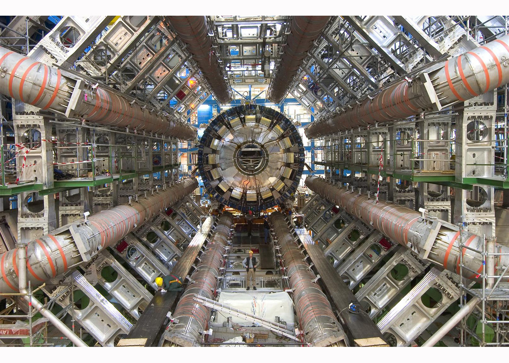

The ATLAS experiment is an enormous collaboration of over 3000
scientists from around 40 countries
interested in studying the millions of proton-proton collisions
produced by the Large Hadron Collider (LHC) at CERN in Geneva, Switzerland.
To do that they built one of the largest and most complex machines in the world.
Weighing about as much as the Eifel Tower and standing as tall the Notre Dame
Cathedral in Paris, it's like a giant 100 million pixel camera with a shutter speed capable
of taking a picture 40 million times a second
and with a resolution on the order of microns. It's an impressive machine!
The picture above is of a mural painted of the detector outside the ATLAS control room;
though the real thing may be even more beautiful.

I've spent the last 6 years working on the ATLAS experiement. Most of that time
I was looking at the petabytes of proton-proton collision data collected by the experiement.
You might recall the famous
discovery of the Higgs boson announced on July 4th, 2012 (Higgsdependence day).
Well, there's me watching the big announcement! (I seem to have made it into an Italian newspaper.)
That was a once in a lifetime discovery which used the same data.
But that data is very rich and so can be looked at in myriad ways.
Some analyses of the data attempt to discover other new particles besides the Higgs;
other analyses use the data simply to better understand the performance and behavior of the massively complicated detector in order to aid
in future analyses;
still others seek to test the validity of our current best description of the universe, the so-called
Standard Model. I have been involved in analyses of all three types.
Searching for the W-prime
In one analysis
we were looking for signatures of an exotic particle called the W-prime.
The W-prime is only
theorized to exist, and if it did then it could be a clue to an entirely unexplored realm beyond the Standard Model.
Which would be even more exciting than the Higgs discovery!
We compared the data to what we would expect if the only the Standard Model were true (the null hypothesis)
and if the W-prime signal were added in on top of that (the alternative hypothesis). You can see a plot of just such a comparison
as a function of the most interesting discriminating variable.
The data is in black, while the standard model prediction is shown in the solid stacked histograms and the proposed signals
are drawn on top as individual lines. As you can see, the data agrees really well with the Standard Model and has no need
for the proposed signal. So we looked and didn't find it.
But you should have expected that because if we had you would have heard about it and I would be in the running for the Nobel Prize.
Studying the Muon Trigger system
In another analysis
we studied the performance of an online data filtering system called the trigger system.
The data comes in so fast from the LHC that there is no way to record it all, so the trigger system uses a combination of
fast electronics and computing clusters to make on the fly decisions about which data is the most interesting. In particular,
we focused on collisions that produce a very special (and my favorite) particle called the muon, which is like the electron's
obese cousin. As you can imagine, this system is incredibly important to understand. If it's not designed properly we could
throw out all of our interesting data without getting a chance to look at it! Fortunately, we understand the trigger system
very well.
Measuring WWW production
Last but not least, in my thesis analysis we used the data to observe for the first time
a process that was predicted by the Standard Model but until the now haven't had a machine that would allow
us to be senstive to it. This is a peculiar phenomenon known as WWW or tri-W production. The Standard Model
predicts a particle called the W boson which was discovered at CERN way back in 1983
and which won Carlo Rubbia and Simon van der Meer the Nobel Prize. Back then they made the discovery using
just a couple of collisions where they observed the production of the W boson on its own. Now, in the modern
era of the LHC single W bosons are produced in copious amounts. But W bosons can also be produced as twins or as triplets
or in conjunction with other particles, it's just way less likely. And the details of those phenomena, like the rate
at which they occur, has important consequences for the Standard Model. Others have looked at many of these production
mechanisms, but none had ever before attempted to look at the production of three W bosons simultaneously.
A particle physicist would represent this process using a Feynman Diagram like this:
where the protons come in from the left and the three W bosons come out on the right.
Being the first to look for this type of process presented unique challenges for understanding and interpreting the data,
which I was involved deeply in every step of the way.
At this moment, the results of the analysis aren't public, but they should be in the next month or two at which point I will
go into detail about the analysis. Stay tuned...